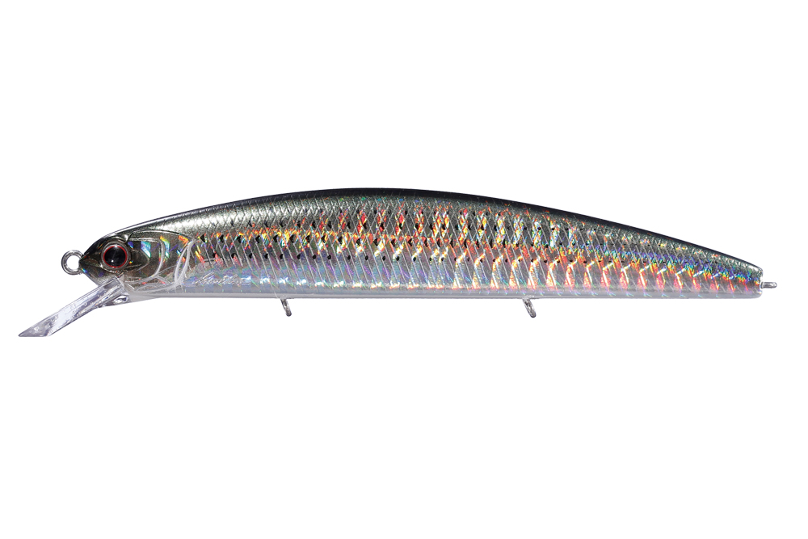
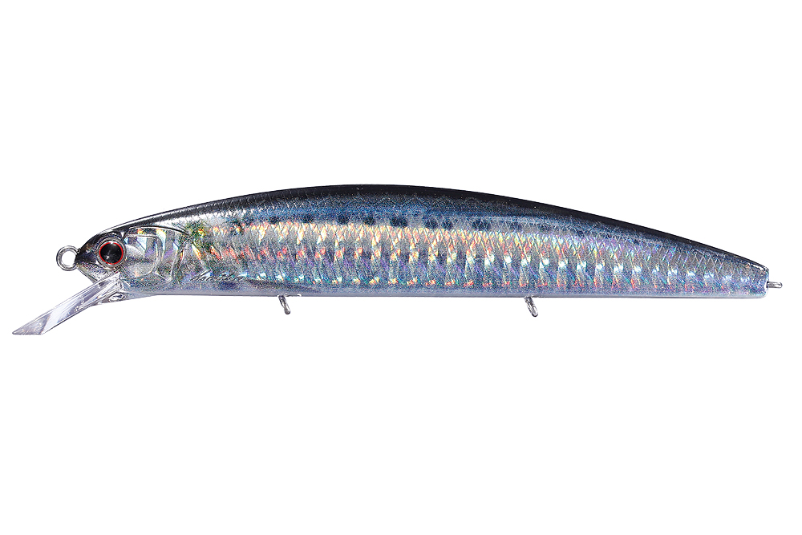
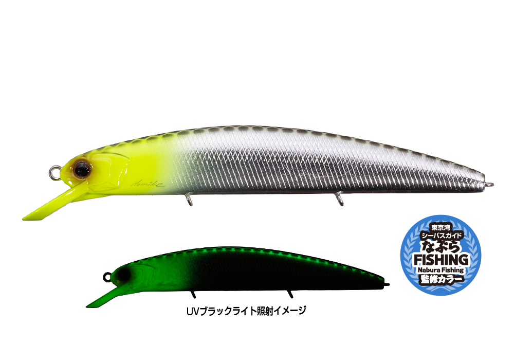
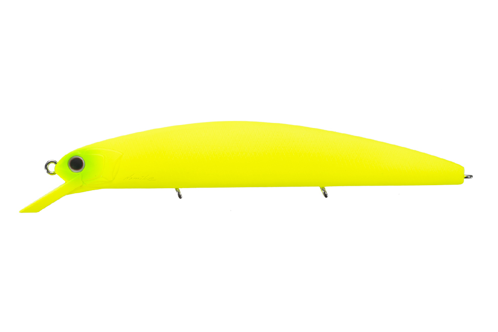

ヴァルナ110SP SW
（ASURA O.S.P VARUNA 110 SP SW）
ヴァルナ110SP SWはO.S.P（オーエスピー）のソルトウォーター用ジャークベイトです。
「阿修羅」から続くフラットサイドコンセプトのミノーで、伝統のフルフラットボディによるフラッシングと強い水押しが持ち味。トリプルタングステン重心移動で飛距離とキャスト精度を高め、「最強の11cmミノー」を目指して開発されたモデルのソルト仕様です。

画像出典:O.S.P公式HP
スペック
- メーカー
- O.S.P（オーエスピー）
- タイプ
- ジャークベイト（サスペンド）
- 全長
- 113mm
- 自重
- 16g
- 最大深度
- ただ巻き2.1m／連続ジャーク2.8m
- フック
- #6
- 重心
- 低重心固定＋トリプルタングステン重心移動
- ターゲット
- シーバス・サワラ・青物
- 価格
- 2,200円（税込）
- 発売
- 2015年2月
▼今すぐチェック

ヴァルナ110SP SWの特徴
フルフラットボディのフラッシングと水押しで誘う、11cmクラスのジャークベイト
-
フルフラットボディ
阿修羅から続くフラットサイドのボディで、ラウンドボディとは比べものにならないフラッシングと水押しを出します。
-
トリプルタングステン重心移動
小口径のタングステンウエイト3個が尾部付近まで移動し、安定した飛行姿勢でキャスト精度と飛距離を高めています。固定ウエイトとの組み合わせで低重心化し、早巻きにも強くなっています。
-
ハニカムスーパーHPボディ
ボディ側面の肉厚を約40％薄くして軽量化しながら、ハニカム構造で強度を維持。泳ぎ出しのよさとレスポンスにつながっています。
-
潜行深度とオールスピード
最大深度はただ巻きで2.1m、連続ジャークで2.8m。早巻きでのバタつきも抑えられていて、どの速度でも食わせられます。
ヴァルナ110SP SWの使い方
トゥイッチやジャークでは、軽い力でキレのいい首振りが出せます。移動距離を抑えながら誘えるので、同じ場所で長く見せたいときに有効です。
サスペンドなので、ジャークの合間にポーズを入れて止めて見せるのも基本。ただ巻きでもウォブル＆ロールでしっかり誘えます。
ヴァルナ110SP SWの得意な状況
水温が低く魚の動きがスローなときや、プレッシャーの高い場所。移動距離を抑えたジャークで長く見せられるので、広範囲から魚を引きつけたい場面に向いています。2m前後のレンジを探りたいときにも使いやすいミノーです。
ワンポイント
サスペンドの「止めて見せる」強みを生かして、ジャーク→ポーズの間を長めに取ってみましょう。追ってきた魚が、止まった瞬間に食うことが多いのがジャークベイトの特徴です。
サワラ・シーバスに使うジャークベイトの使い分け
| モデル | 全長／自重 | 得意な場面 |
|---|---|---|
| ヴァルナ110SP SW | 113mm／16g | サスペンド。止めて見せる釣りと2m前後のレンジに（本記事のモデル） |
| アークローバー125S | 125mm／17g | シンキング。幅広ダートとヒラウチでサワラを誘い出す |
| MDラウドジャーク120S | 120mm／19g | シンキング。約3mの一段深いレンジに |
| ブローウィン140J | 140mm／26g | シンキング。重さと飛距離でサワラキャスティングに |
同じジャークベイトでも、サスペンドかシンキングか、潜るレンジや重さで使いどころが変わります。止めて見せたいならヴァルナ、深いレンジならMDラウドジャーク、遠投とダートならアークローバーやブローウィン140Jと使い分けましょう。
人気カラー
SWカラーの中から4色を紹介します。

コノシロ HS86コノシロを意識したホロ系のナチュラルカラー。コノシロパターンに。

リアルイワシ RP58イワシをリアルに再現したカラー。イワシを追うサワラや青物に。

なぶら麒麟ヘッド(GLOW) TS15ヘッドのグローで目立たせるアピールカラー。ナブラ撃ちやマズメに。

オールマットチャート PB15マットなチャートでシルエットを強く出すカラー。濁りに。
画像出典:O.S.P公式HP
ヴァルナ110SP SWに似ているルアー
-
 MDラウドジャーク120S
SHIMANO
詳細はこちら＞
MDラウドジャーク120S
SHIMANO
詳細はこちら＞
全長120mm・自重19gのSW専用ジャークベイト。約3mの一段深いレンジをジャーキングで攻めたいときに。
-
 アークローバー125S
パームス
詳細はこちら＞
アークローバー125S
パームス
詳細はこちら＞
全長125mm・自重17gのジャーキングミノー。幅広のダートとヒラウチで、サワラを誘い出す専用ミノー。
-
 ブローウィン140J
ブルーブルー
詳細はこちら＞
ブローウィン140J
ブルーブルー
詳細はこちら＞
全長140mm・自重26gのジャーキングミノー。サワラキャスティングで支持されている1本。